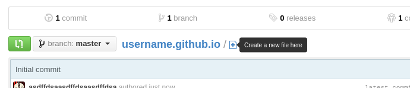

Head over to the GitHub homepage and create an account (if you don't have one already).
Once your account is created and you're logged in,
create a new repository
Make sure the Repository name is username.github.io
Also make sure to check the Initialize this repository with a README checkbox!
This will be the first page people see when they visit your website.
Click the "Create new file button"...
Name your file index.html
After naming your new file "index.html", type in some content.
HELLO WORLD!
Saving changes to a repository is called "commiting". Click the Commit changes button.
Head on over to http://username.github.io. Give it up to ten minutes for your page to show up—there will be a delay this very first time. Any future changes will show up pretty much instantly.
For Project sites, you have the option to generate a site with one of the amazing pre-built themes, or to create a site from scratch.
Head over to GitHub.com and create a new repository, or go to an existing one. On the right hand side, click on Settings.
For Project pages, the gh-pages branch is used to publish your site. That means that you can work with GitHub Pages in the same repository as the project that it's for, without affecting the project itself.
Scroll down to the GitHub Pages module. Press the Automatic Page Generator button.
Use the editor to add content to your site. If you already have a README.md in your project, you can import that on the right hand side.
When you're done, click Continue to Layouts.
Choose between the themes in the carouselle at the top. When you're done, click the Publish button on the right hand side.
Head over to GitHub.com and create a new repository, or go to an existing one. In the repository overview, click the branch drop-down on the left-hand side. Type in gh-pages and press enter.
For Project pages, the gh-pages branch is used to publish your site. That means that you can work with GitHub Pages in the same repository as the project that it's for.
If you created a new branch for GitHub Pages, enter the repository settings on the right hand side. In the top module, change the default branch to the newly created gh-pages branch.
Go back to the repository overview, and use the plus icon next to the repository name to create a new file.
Name the file index.html and type in Hello World for the content.
Scroll to the bottom of the page, write a commit message, and commit the new file.
Fire up a browser and go to http://username.github.io/repository. Give it a couple of minutes for your page to show up—there will be a delay this very first time. In the future, changes will show up quite a bit faster.